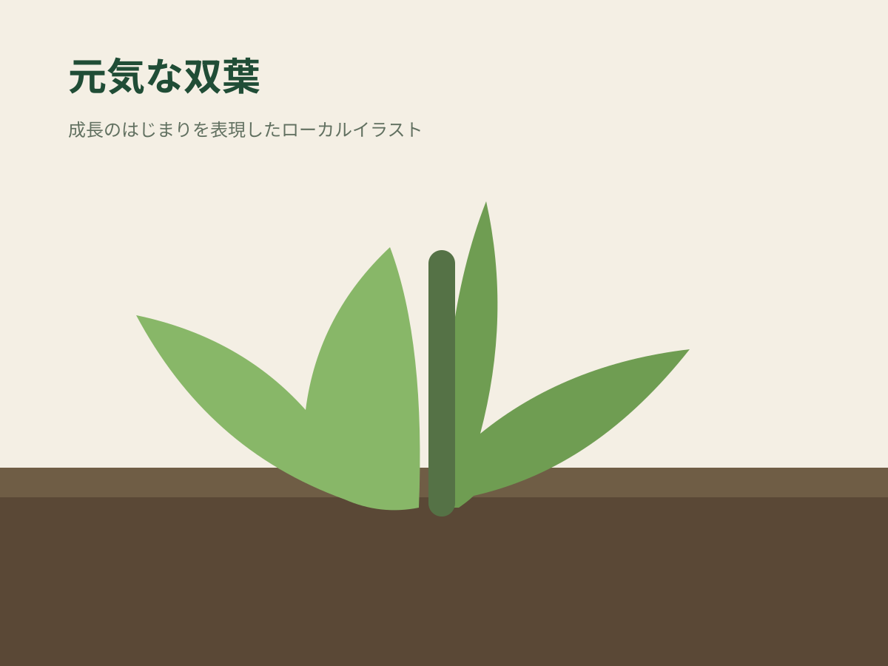
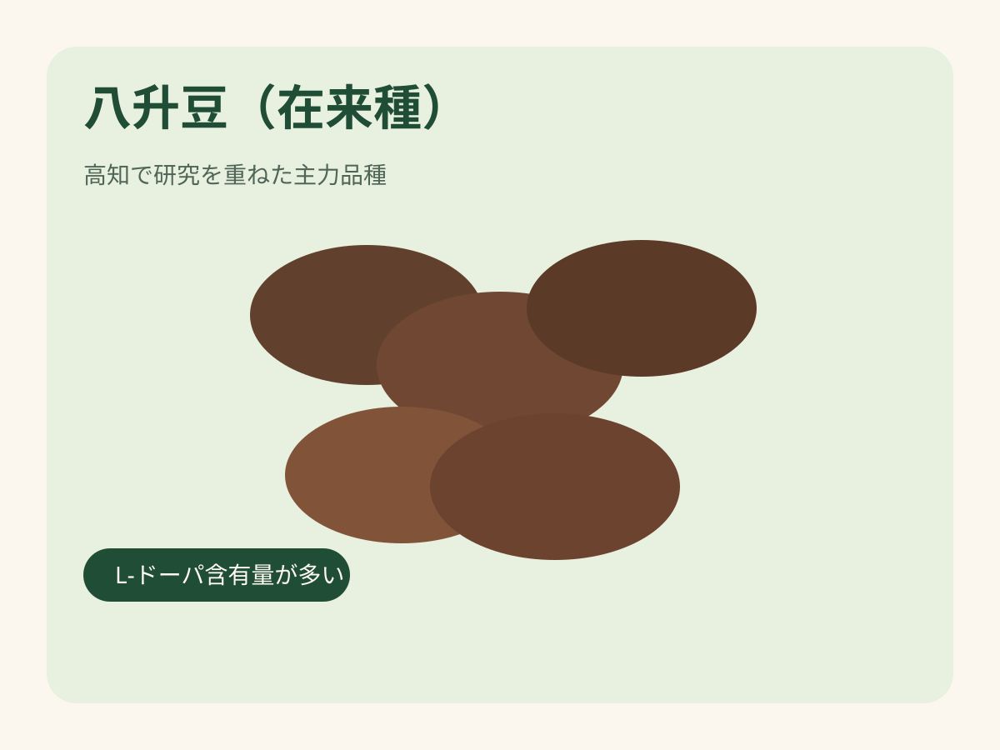
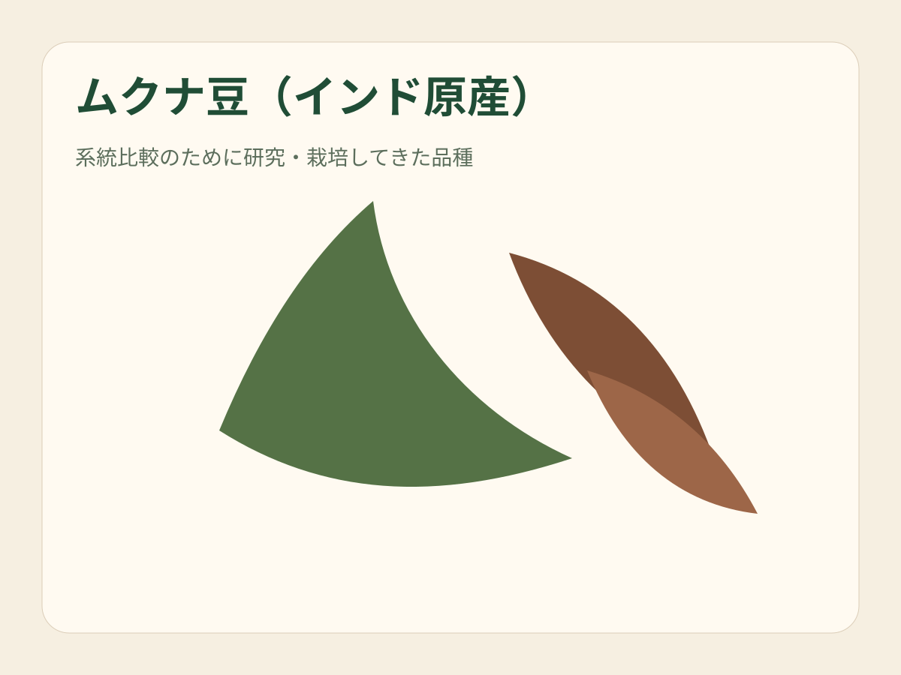
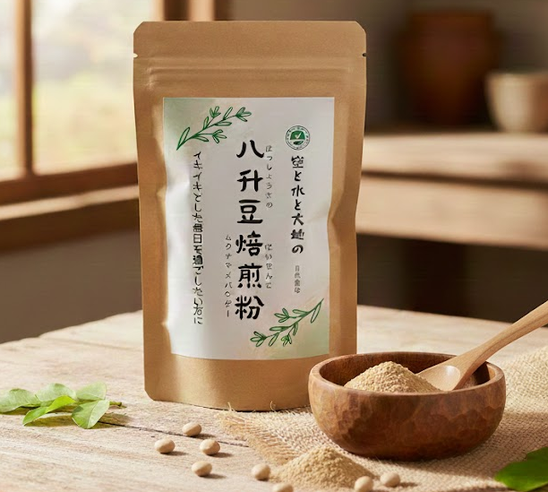
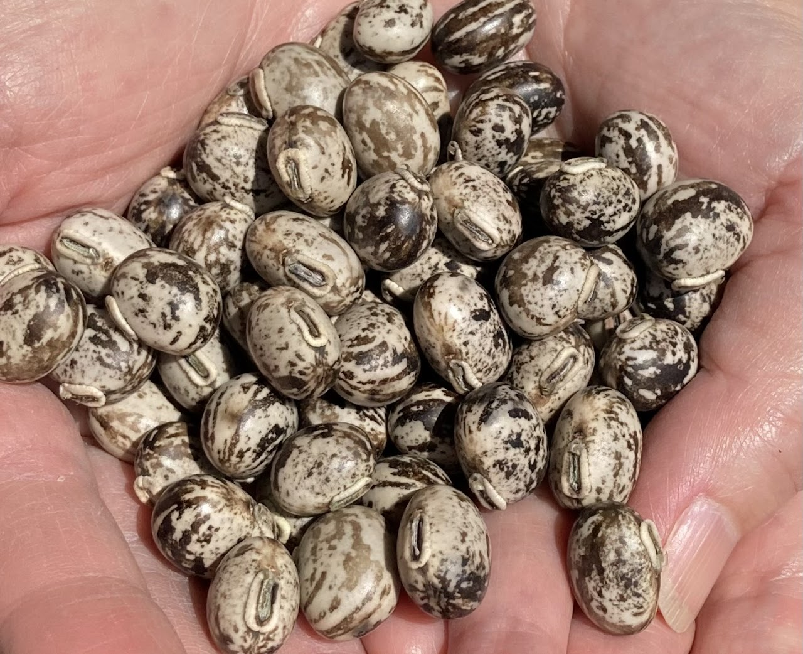
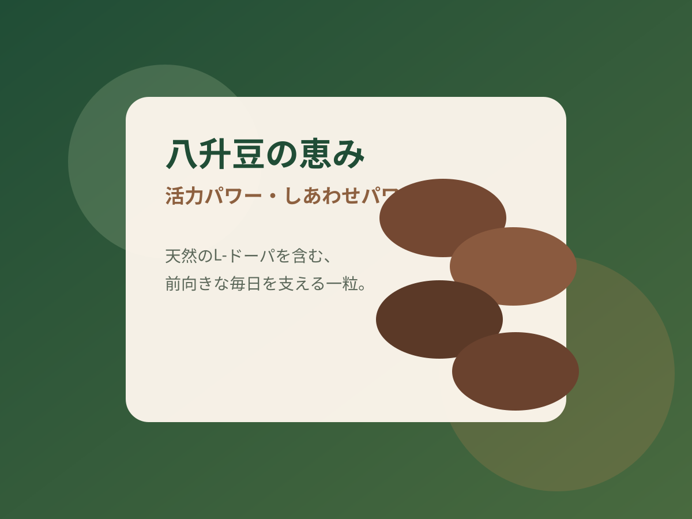
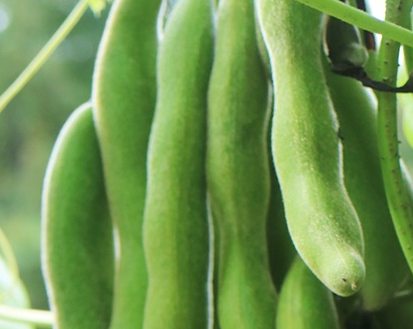

伝統食材としての豊かな栄養価
高知産ムクナ豆100%使用
古くから八升豆の名で親しまれてきた伝統食材。高知の太陽を浴びて育った豆の恵みを、そのままの形で届けます。



Message
高知の豊かな自然の中で育まれたムクナ豆。私たちは2016年にこの豆と出会い、その秘めたる可能性を確信しました。栽培から発送まで、すべて自分たちで行う。それが、皆様に最高の鮮度と安心をお届けするための、私たちの誇りです。
代表 山本康博

Our Work
高知産ムクナ豆100%使用
古くから八升豆の名で親しまれてきた伝統食材。高知の太陽を浴びて育った豆の恵みを、そのままの形で届けます。
農薬・化学肥料不使用
四国山脈からの清らかな水と、ミネラル豊富な土。種まきから収穫まで、一株ずつ状態を見極めながら丁寧に育てています。
焙煎したてを最短発送
豆は繊細で鮮度が命。昔ながらの手法でじっくり煎り上げ、香りと出来たての鮮度をそのままにお届けします。
Varieties
これまで様々なムクナ豆種を栽培し研究してきました。その中でも八升豆（在来種）が一番L-ドーパの含有量が多いことがわかりました。

Power
八升豆の恵み（パワー）。八升豆（ムクナ豆）は、古くから人々の健康を支えてきた知恵の宝庫です。この特別な豆には、天然のL-ドーパが豊富に含まれており、これが私たちの「やる気」や「喜び」といった前向きな気持ちと深く関わるドーパミンの元となります。
忙しい日々の中で「もう一頑張りしたい」「気分を明るく保ちたい」、そんなあなたに、八升豆の恵みが内側からそっと寄り添い、はつらつとした毎日を送るためのお手伝いをします。

Growth
芽吹き、蔓を伸ばし、花を咲かせ、たわわに実るまで。南国高知の太陽を浴びた八升豆は、驚くほどの速さで、逞しく天へと伸びていきます。


この圧倒的な成長エネルギーこそが、一粒一粒に蓄えられた生命力の証。豊かな大地が育んだ「ちから」を、そのまま、あなたの明日への活力へ。

Company
日本で生き、働き、大切な人の幸せを願う。そのすべての営みの土台は、日々の「食」にあります。愛情を込めて育てた一粒一粒は、私たちの血となり肉となり、明日を生きる力強い生命力へと変わります。